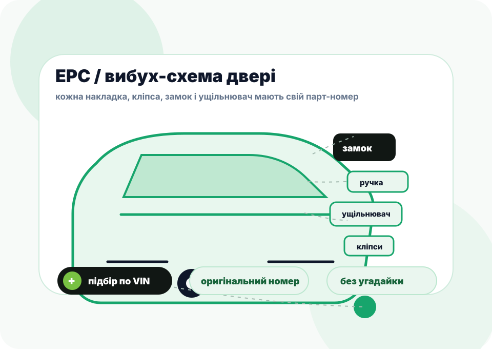

Партнерские условия
Отдельные цены для СТО, прозрачный расчет доставки и возможность заложить свою работу без борьбы с локальными наценками.
Партнерство для сервисов
EVLine работает как ваш китайский отдел поставок: подбор по VIN, закупка в Китае, документы, фотоотчеты, технические карты и отдельный канал для быстрой коммуникации.
СТО получает поставщика, который знает китайские каталоги, логистику и нюансы современных EV/PHEV.
Без общих обещаний. Вот где мы реально снимаем нагрузку с мастера, приемщика и владельца СТО.
Отдельные цены для СТО, прозрачный расчет доставки и возможность заложить свою работу без борьбы с локальными наценками.
Проверяем детали по VIN, фото, комплектации и китайским каталогам. Меньше ошибок, возвратов и зависших авто на подъемнике.
Можем работать напрямую с СТО: вы ведете клиента, мы остаемся поставщиком и техническим back office.
Счета, подтверждения, документы для частных клиентов, страховых, автопарков, фондов и юридических лиц.
Для комплектов ТО готовим перечень компонентов, схемы доступа, контрольные точки, порядок работ и моменты затяжки.
По BYD подключаем направление программирования: диагностика блоков, обновления, калибровка, CarPlay, мультимедиа, BMS и ADAS.
Китайские авто быстро меняются: разные комплектации, дорогие блоки, оптика, батарейные контуры, скрытые отличия по годам. Мы берем на себя поиск и проверку, чтобы ваша команда занималась ремонтом.
Отдельный Telegram-формат: VIN, фото, деталь, статус, вопрос по техкарте — без длинных переписок с разными людьми.
Объясняем разницу между оригиналом, OEM и аналогом, сроками авиа/моря, рисками неправильного подбора.
Фото детали, маркировки, упаковки и состояния еще в Китае — чтобы вы могли показать клиенту, что именно едет.
Оригинальные расходники плюс технологическая карта для механика: что менять, где откручивать, с каким моментом затягивать.
Мы работаем с электронными каталогами запчастей, exploded-view схемами узлов, электрическими схемами и дилерскими инструментами. Поэтому можем не просто “найти бампер”, а определить конкретную накладку, кронштейн, клипсу, уплотнитель, замок или проводку под VIN.


Есть собственный доступ для работы с BYD и ZCar, поэтому можем выступать сторонним специалистом для сложных диагностических и программных задач.
Ориентируемся в схемах питания, датчиках, блоках, разъемах и проводке, когда причина не сводится к одной детали.
Подбираем не “похожую” деталь, а конкретную позицию из каталога: в сборе или отдельно, с учетом года, комплектации и рынка авто.
VIN, фото, модель, описание проблемы или список работ.
Каталоги, совместимость, наличие, маршрут и варианты качества.
Цена, срок, авиа/море, документы, комментарии для клиента.
Проверка в Китае, фото, упаковка, трек и статусы.
Клиент получает сервис у вас, а EVLine остается партнером.
BYD, Zeekr, Xiaomi, Li Auto, NIO, XPENG, Smart, Volvo EX30, Volkswagen ID, Polestar, MG.
Оптика, бамперы, крылья, двери, стекла, датчики, камеры, кронштейны и мелкие позиции после ДТП.
Официальная оплата, документы и понятное сопровождение для автопарков, страховых и лизинговых машин.
Не нужно держать отдельного закупщика в Китае. Мы берем на себя поиск, проверку и логистику.
Жидкости, редукторы, фильтры, контуры охлаждения, 12V АКБ, диагностика и технические карты для ТО.
Напишите, с какими авто работаете и что нужно чаще: кузов, оптика, ходовая, ТО, программирование, документы или сопровождение клиента. Менеджер предложит удобный формат сотрудничества.
Да. Если СТО ведет клиента самостоятельно, мы работаем как поставщик: даем цену, срок, фото, документы и статусы заказа.
Да, партнерские условия обсуждаем после первого контакта. Они зависят от частоты заказов, типа деталей и формата работы.
Да. Привозим даже один болт, клипсу, кронштейн, датчик или уплотнение, если это нужно для завершения ремонта.
По BYD можем подключить направление программирования и диагностики. Если проблема в софте, блоке или калибровке, не будем продавать лишнюю деталь.